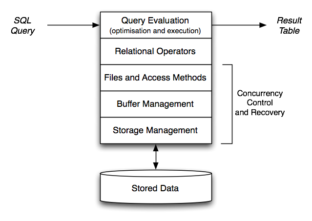

COMP9315 Week 01 Monday Lecture
COMP9315 24T1 ♢ Week 1 Monday Lecture ♢ [0/42]
COMP9315 24T1
DBMS Implementation
( Data structures and algorithms inside relational DBMSs )
Lecturer: John Shepherd
Web Site: http://www.cse.unsw.edu.au/~cs9315/
(If WebCMS unavailable, use http://www.cse.unsw.edu.au/~cs9315/24T1/)
COMP9315 24T1 ♢ Week 1 Monday Lecture ♢ [1/42]
| Name: | | John Shepherd |
| Admin: | | Deputy Head of School (education) |
| Office: | | K17-410 (turn right from lift) |
| Email: | | cs9315@cse.unsw.edu.au |
| Consults: | | still working out the details |
| Research: | |
e-Learning Technologies (e.g. Webcms)
Information Extraction/Integration
Information Retrieval/Web Search
Multimedia Databases
Query Processing
|
COMP9315 24T1 ♢ Week 1 Monday Lecture ♢ [2/42]
| Email: | | cs9315@cse.unsw.edu.au
|
| The Nucleus |
| Enrolment problems |
| Special Consideration |
| Illness, Misadventure
Assignment extension, Supp Exam
Must be documented |
| Forum |
| Assignment Problems |
| Email/Help Sessions |
| Detailed assignment Problems |
COMP9315 24T1 ♢ Week 1 Monday Lecture ♢ [3/42]
Introduce you to:
- architecture of relational DBMSs (e.g. PostgreSQL)
- algorithms/data-structures for data-intensive computing
- representation of relational database objects
- representation of relational operators (sel,proj,join)
- techniques for processing SQL queries
- techniques for managing concurrent transactions
- ?concepts in distributed and non-relational databases?
Develop skills in:
- analysing the performance of data-intensive algorithms
- the use of C to implement data-intensive algorithms
COMP9315 24T1 ♢ Week 1 Monday Lecture ♢ [4/42]
We assume that you are already familiar with
- the C language and programming in C (or C++)
(e.g. completed ≥ 1 programming course in C)
- developing applications on RDBMSs
(SQL, [relational algebra] e.g. an intro DB course)
- basic ideas about file organisation and file manipulation
(Unix open, close, lseek, read, write, flock)
- sorting algorithms, data structures for searching
(sorting, trees, hashing e.g. a data structures course)
If you don't know this material very well,
don't take this course.
COMP9315 24T1 ♢ Week 1 Monday Lecture ♢ [5/42]
❖ Exercise: SQL (revision) | |
Given the following schema:
Students(sid, name, degree, ...)
Courses(cid, code, term, title, ...)
Enrolments(sid, cid, mark, grade)
Write an SQL query to solve the problem
- find all students who passed COMP9315 in 18s2
- for each student, give (student ID, name, mark)
COMP9315 24T1 ♢ Week 1 Monday Lecture ♢ [6/42]
❖ Exercise: Unix File I/O (revision) | |
Write a C program that reads a file, block-by-block.
Command-line parameters:
- block size in bytes
- name of input file
Use low-level C operations:
open, read.
Count and display how many blocks/bytes read.
COMP9315 24T1 ♢ Week 1 Monday Lecture ♢ [7/42]
What's available for you:
- Textbooks: describe some syllabus topics in detail
- Notes: describe syllabus topics in some detail (from 2019)
- Topic Videos: describe syllabus topics in less detail (from 2021)
- Lecture slides: summarise Topic Videos and contain exercises (old+new)
- Lecture videos: for review or if you miss a lecture, or are in WEB stream
- Readings: research papers on selected topics
The onus is on
you to use this material.
Note: Exercises and videos will be available only after the lecture.
COMP9315 24T1 ♢ Week 1 Monday Lecture ♢ [8/42]
❖ Learning/Teaching (cont) | |
Things that you need to do:
- Exercises: tutorial-like questions
- Prac work: lab-class-like exercises
- Assignments: large/important practical exercises
- On-line quizzes: for self-assessment
Dependencies:
- Exercises → Exam (theory part)
- Prac work → Assignments → Exam (prac part)
There are
no tute/lab classes; use Forum, Email, Help Sessions
- debugging is best done in person (can see full context)
- at the very least, send error messages (not screenshots)
COMP9315 24T1 ♢ Week 1 Monday Lecture ♢ [9/42]
| Week 01 | | intro, dbms review, RA, catalogs |
| Week 02 | | storage: disks, buffers, pages, tuples |
| Week 03 | | RA ops: scan, sort, projection |
| Week 04 | | selection: heaps, hashing, indexes |
| Week 05 | | selection: N-d matching, similarity |
| Week 06 | | no lectures |
| Week 07 | | joins: naive, sort-merge, hash join |
| Week 08 | | query processing, optimisation |
| Week 09 | | transactions: concurrency, recovery |
| Week 10 | | distributed and non-SQL databases |
COMP9315 24T1 ♢ Week 1 Monday Lecture ♢ [10/42]
No official text book; several are suitable ...

- Garcia-Molina, Ullman, Widom
"Database Systems: The Complete Book"
- Ramakrishnan, Gehrke
"Database Systems Management"
- Silberschatz, Korth, Sudarshan
"Database System Concepts"
- Kifer, Bernstein, Lewis
"Database Systems: An algorithmic-oriented approach"
- Elmasri, Navathe
"Database Systems: Models, languages, design ..."
but not all cover all topics in detail
COMP9315 24T1 ♢ Week 1 Monday Lecture ♢ [11/42]
In this course, we use PostgreSQL v15.6 (compulsory)
Prac Work requires you to compile PostgreSQL from source code
- instructions explain how to do this on Linux at CSE
- also works easily on Linux and Mac OSX at home
- PostgreSQL docs describe how to compile for Windows
Make sure you do the first Prac Exercise when it becomes available.
Sort out any problems ASAP (preferably at a help session).
COMP9315 24T1 ♢ Week 1 Monday Lecture ♢ [12/42]
PostgreSQL is a large software system:
- > 2400 source code files in the core engine/clients
- > 1,400,000 lines of C code in the core
You won't be required to understand all of it :-)
You will need to learn to navigate this code effectively.
Will discuss relevant parts in lectures to help with this.
PostgreSQL books?
- tend to add little to the manual, and cost a lot
COMP9315 24T1 ♢ Week 1 Monday Lecture ♢ [13/42]
Schedule of assignment work:
| Ass | | Description | | Due | | Marks |
| 1 | | New Data Type | | Week 5 | | 15% |
| 2 | | Query Processing | | Week 10 | | 20% |
Assignments will be carried out individually
Ultimately, submission is via CSE's give system.
Will spend some time in lectures reviewing assignments.
Assignments will require up-front code-reading (see Pracs).
COMP9315 24T1 ♢ Week 1 Monday Lecture ♢ [14/42]
Don't leave assignments to the last minute
- they require significant code reading
- as well as code writing and testing
- and, you can submit early.
Standard UNSW late penalty applies to assignments
- 5% off total mark for each day late
- after 5 days, mark is zero
Valid special consideration can give extension of X days
- late penalty starts accruing after X days
COMP9315 24T1 ♢ Week 1 Monday Lecture ♢ [15/42]
Cheating will be penalised with mark of zero for that assignment
- submitting work copied from another student
- submitting work copied from an online code repo
- submitting work derived from generative AI
- submitting work written by someone else for $$$
You are only cheating yourself ... losing an opportunity to
learn
COMP9315 24T1 ♢ Week 1 Monday Lecture ♢ [16/42]
Over the course of the semester ...
- five online quizzes; released Monday, due Friday
- taken in your own time (but there are deadlines)
- each quiz is worth a small number of marks
Quizzes are primarily a review tool to check progress.
But they contribute 15% of your overall mark for the course.
No extensions on quizzes, since solutions released on following Monday
For valid special consideration on quiz
- cancel late penalty if quiz submitted before solutions released
- remove this quiz from calculation of overall quiz mark if not submitted
COMP9315 24T1 ♢ Week 1 Monday Lecture ♢ [17/42]
Three-hour exam in the May exam period.
Exam is held in CSE Labs (learn the environment, VLab)
PostgreSQL and C documentation (only) will be available in the exam.
Things that we can't reasonably test in the exam:
- writing large programs, running major experiments
Everything else is potentially examinable.
Contains: descriptive questions, analysis, small programming exercises.
Exam contributes 50% of the overall mark for this course.
COMP9315 24T1 ♢ Week 1 Monday Lecture ♢ [18/42]
If you cannot attend the final exam ...
- because of documented illness/misadventure
then you will be offered a Supplementary Exam (in O-week of Term 2)
You get one chance at passing the exam
- unsw's fit-to-sit rule applies
Exam hurdle 20/50 (which is 40%)
You must attend the exam in-person
- no online exams are available ... be in Sydney ... be at UNSW
COMP9315 24T1 ♢ Week 1 Monday Lecture ♢ [19/42]
Your final mark/grade is computed according to the following:
quiz = mark for on-line quizzes (out of 15)
ass1 = mark for assignment 1 (out of 15)
ass2 = mark for assignment 2 (out of 20)
exam = mark for final exam (out of 50)
okExam = exam > 20/50 (after scaling)
mark = ass1 + ass2 + quiz + exam
grade = HD|DN|CR|PS, if mark ≥ 50 && okExam
= FL, if mark < 50 && okExam
= UF, if !okExam
COMP9315 24T1 ♢ Week 1 Monday Lecture ♢ [20/42]
❖ Relational Database Revision | |
COMP9315 24T1 ♢ Week 1 Monday Lecture ♢ [21/42]
❖ Relational DBMS Functionality | |
Relational DBMSs provide a variety of functionalities:
- storing/modifying data and meta-data (data defintions)
- constraint definition/storage/maintenance/checking
- declarative manipulation of data (via SQL)
- extensibility via views, triggers, stored procedures
- query re-writing (rules), optimisation (indexes)
- transaction processing, concurrency/recovery
- etc. etc. etc.
Common feature of all relational DBMSs: relational model, SQL.
COMP9315 24T1 ♢ Week 1 Monday Lecture ♢ [22/42]
Relational data: relations/tables, tuples, values, types, e.g.
create domain WAMvalue float
check (value between 0.0 and 100.0);
create table Students (
id integer, -- e.g. 3123456
familyName text, -- e.g. 'Smith'
givenName text, -- e.g. 'John'
birthDate date, -- e.g. '1-Mar-1984'
wam WAMvalue, -- e.g. 85.4
primary key (id)
);
The above adds meta-data to the database.
DBMSs typically store meta-data as special tables (catalog).
COMP9315 24T1 ♢ Week 1 Monday Lecture ♢ [23/42]
Input: DDL statement (e.g. create table)
Result: meta-data in catalog is modified
COMP9315 24T1 ♢ Week 1 Monday Lecture ♢ [24/42]
Critical function of DBMS: changing data
-
insert new tuples into tables
-
delete existing tuples from tables
-
update values within existing tuples
E.g.
insert into Enrolments(student,course,mark)
values (3312345, 5542, 75);
update Enrolments set mark = 77
where student = 3354321 and course = 5542;
delete Enrolments where student = 3112233;
COMP9315 24T1 ♢ Week 1 Monday Lecture ♢ [25/42]
❖ Data Modification (cont) | |
Input: DML statements
Result: tuples are added, removed or modified
COMP9315 24T1 ♢ Week 1 Monday Lecture ♢ [26/42]
Most common function of relational DBMSs
- read an SQL query
- return a table giving result of query
E.g.
select s.id, c.code, e.mark
from Students s
join Enrolments e on s.id = e.student
join Courses c on e.course = c.id;
COMP9315 24T1 ♢ Week 1 Monday Lecture ♢ [27/42]
Input: SQL query
Output: table (displayed as text)
COMP9315 24T1 ♢ Week 1 Monday Lecture ♢ [28/42]
The aim of this course is to
- look inside the DBMS box
- discover the various mechanisms it uses
- understand and analyse their performance
Why should we care?
(apart from passing the exam)
Practical reason:
- if we understand how query processor works,
we can (maybe) do a better job of writing efficient queries
Educational reason:
- DBMSs contain interesting data structures + algorithms
which may be useful outside the (relational) DBMS context
COMP9315 24T1 ♢ Week 1 Monday Lecture ♢ [29/42]
❖ DBMS Architecture (cont) | |
Path of a query through a typical DBMS:
COMP9315 24T1 ♢ Week 1 Monday Lecture ♢ [30/42]
❖ DBMS Architecture (cont) | |

COMP9315 24T1 ♢ Week 1 Monday Lecture ♢ [31/42]
❖ DBMS Architecture (cont) | |
Important factors related to DBMS architecture
- data is stored permanently on large slow devices**
- data is processed in small fast memory
Implications:
- data structures should minimise storage utilisation
- algorithms should minimise memory/disk data transfers
Modern DBMSs interact with storage via the O/S file-system.
** SSDs change things a little, but most high volume bulk storage still on disks
COMP9315 24T1 ♢ Week 1 Monday Lecture ♢ [32/42]
❖ DBMS Architecture (cont) | |
Implementation of DBMS operations is complicated by
- potentially multiple concurrent accesses to data structures
(not just data tables, but indexes, buffers, catalogues, ...)
- transactional requirements (atomicity, rollback, ...)
- requirement for high reliability of raw data (recovery)
Require "concurrency-tolerant" data structures.
Transactions/reliability require some form of logging.
COMP9315 24T1 ♢ Week 1 Monday Lecture ♢ [33/42]
❖ Installing/Using PostgreSQL | |
COMP9315 24T1 ♢ Week 1 Monday Lecture ♢ [34/42]
PostgreSQL is available via the COMP9315 web site.
Provided as tar-file in ~cs9315/web/24T1/postgresql/
File: postgresql-15.6.tar.bz2 is ~23MB **
Unpacked, source code + binaries is ~210MB **
If using on CSE, do not put it under your home directory
Place it under /localstorage/YOU/ which has 600MB quota
COMP9315 24T1 ♢ Week 1 Monday Lecture ♢ [35/42]
If you have databases from previous DB courses
- the databases will no longer work under v15.6
- to preserve them, use dump/restore
E.g.
COMP9315 24T1 ♢ Week 1 Monday Lecture ♢ [36/42]
❖ Installing/Using PostgreSQL | |
Environment setup for running PostgreSQL in COMP9315:
# Must be "source"d from sh, bash, ksh, ...
export PGDATA=/localstorage/$USER/pgsql/data
export PGHOST=$PGDATA
export LD_LIBRARY_PATH=/localstorage/$USER/pgsql/lib
export PATH=/localstorage/$USER/pgsql/bin:$PATH
alias p0="pg_ctl stop"
alias p1="pg_ctl -l $PGDATA/log start"
Will probably work (with tweaks) on home laptop if Linux or MacOS
COMP9315 24T1 ♢ Week 1 Monday Lecture ♢ [37/42]
❖ Installing/Using PostgreSQL (cont) | |
Brief summary of installation:
$ tar xfj ..../postgresql/src.tar.bz2
$ configure --prefix=$PGHOME
$ make
$ make install
$ source your/environment/file
$ initdb
$ edit postgresql.conf
$ pg_ctl start -l $PGDATA/log
$ pg_ctl stop
COMP9315 24T1 ♢ Week 1 Monday Lecture ♢ [38/42]
❖ Exercise: Install PostgreSQL | |
Follow instruction from previous slide (or P01)
install a PostgreSQL server
run it without setting environment
try to use it without running server
try to close it while a job is running
examine the files/directories under $PGDATA
COMP9315 24T1 ♢ Week 1 Monday Lecture ♢ [39/42]
❖ Using PostgreSQL for Assignments | |
If changes don't modify storage structures ...
$ edit source code
$ pg_ctl stop
$ make
$ make install
$ pg_ctl start -l $PGDATA/log
$ pg_ctl stop
In this case, existing databases will continue to work ok.
COMP9315 24T1 ♢ Week 1 Monday Lecture ♢ [40/42]
❖ Using PostgreSQL for Assignments (cont) | |
If changes modify storage structures ...
$ edit source code
$ save a copy of postgresql.conf
$ pg_dump testdb > testdb.dump
$ pg_ctl stop
$ make
$ make install
$ rm -fr $PGDATA
$ initdb
$ restore postgresql.conf
$ pg_ctl start -l $PGDATA/log
$ createdb testdb
$ psql testdb -f testdb.dump
Old databases will not work with the new server.
COMP9315 24T1 ♢ Week 1 Monday Lecture ♢ [41/42]
❖ Using PostgreSQL for Assignments (cont) | |
Troubleshooting ...
- read the
$PGDATA/log file
- which socket file are you trying to connect to?
- check the
$PGDATA directory for socket files
- remove
postmster.pid if sure no server running
- ...
Prac Exercise P01 has useful tips down the bottom
COMP9315 24T1 ♢ Week 1 Monday Lecture ♢ [42/42]
Produced: 13 Feb 2024
![[Diagram:Pics/intro/pgsql.jpg]](./lec01_files/pgsql.jpg)